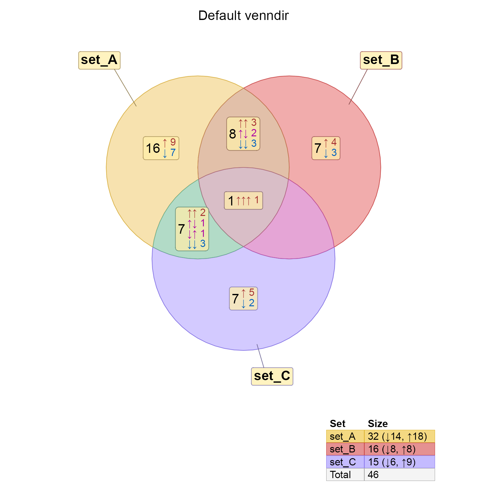
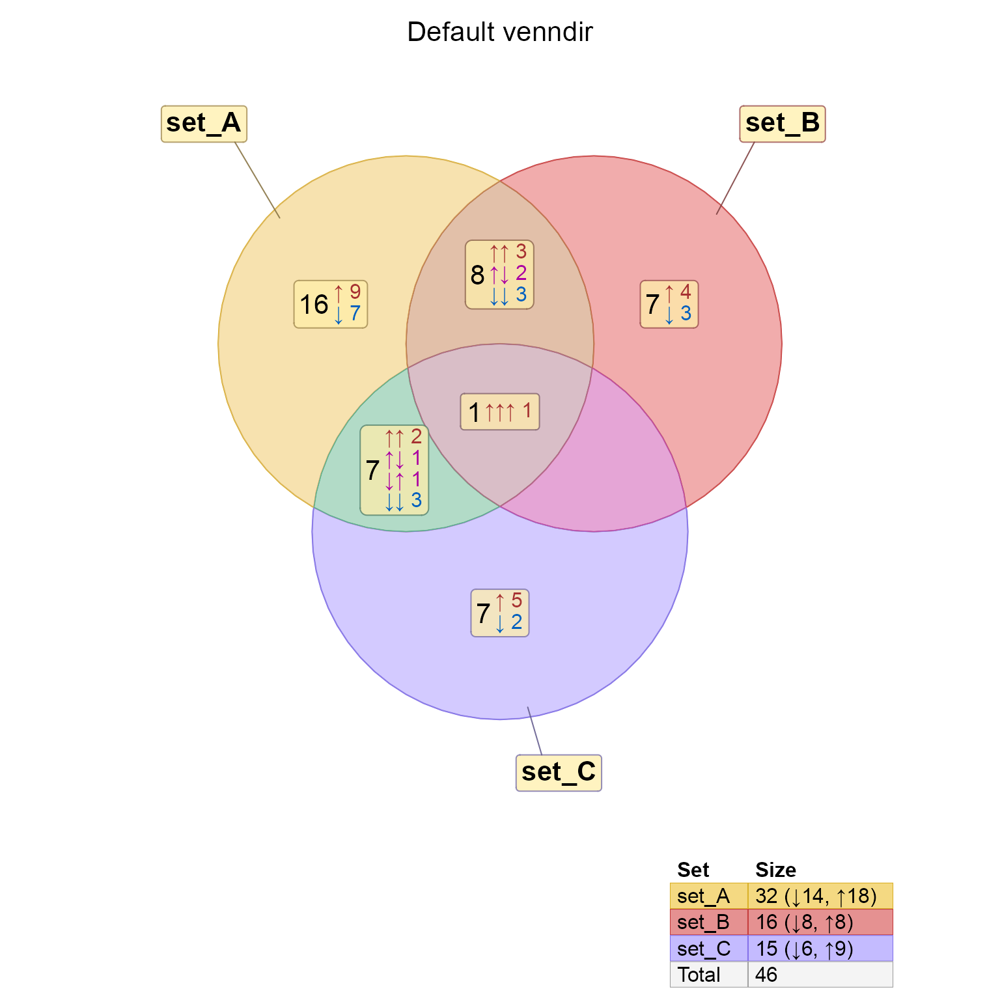
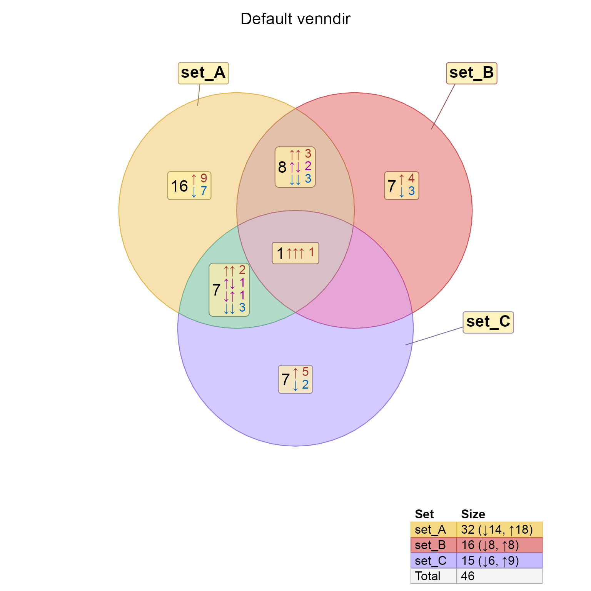
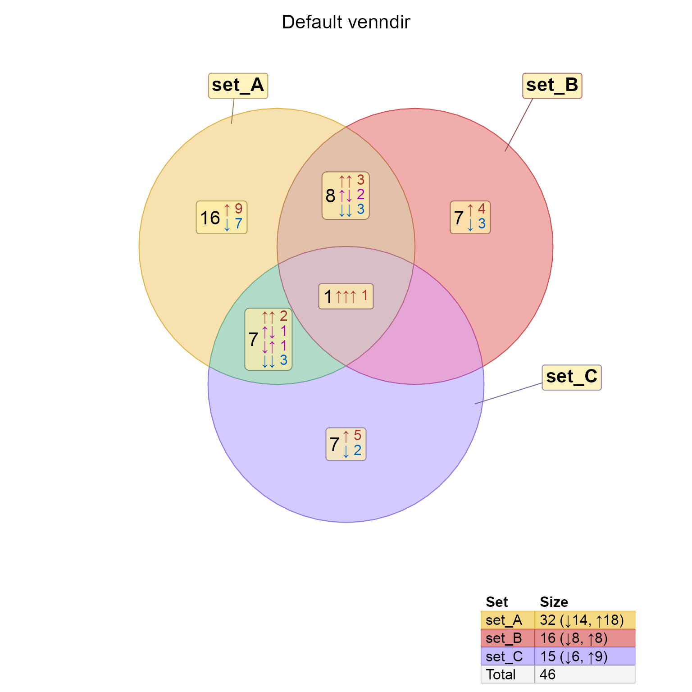

Nudge venndir labels
Arguments
- venndir_output
output from
venndir()asVenndirobject.- set
charactername of the sets or overlaps to adjust.- x_offset, y_offset
numericcoordinates to adjust, recycled to the number of entries provided inset.- offset_list
list(default NULL) used as a shorthand alternative toset,x_offset,y_offset. The format is alistwith x,y offset values, with list elements named by set. For example:offset_list = list(setA=c(0, 0.1), set_B=c(-0.1, 0))- align_y, align_x
characterstring for optional alignment of labels, where all labels insetare aligned.This option is recommended only with
label_location="outside", in order to align labels relative to each other.It is recommeded for example, to make sure two top labels are placed at the same height relative to each other.
All labels in
setare adjusted as a group, after applyingx_offset,y_offset.The coordinates of all labels in
setare used, then the target coordinate is defined by the logic:"top","middle","bottom"- uses the highest, middle, or lowest coordinate among the labels inset."left","center","right"- uses the left-most, center, or right-most coordinate among the labels inset.
- unit_type
characterstring (default "relative") defining how to interpret thex_offset,y_offsetvalues."relative"- interprets the adjustment relative to the plot bounding box, specifically the largest axis span. This option is useful when the plot span is not known."absolute"- interprets the adjustment with absolute units, which is useful when the plot span is known.
- label_location
characterstring (default "outside") indicating which label coordinate to adjust:"outside"- will only adjust the outer label, leaving the inner label position unaffected."inside"- will only adjust the inner label, leaving the outer label position unaffected."all"- will adjust both the inner and outer label positions together.
- verbose
logicalindicating whether to print verbose output.- ...
additional arguments are ignored.
Value
Venndir object after adjusting label coordinates
Details
Venndir labels are defined for each overlap polygon, with "inner"
and "outer" label coordinates for each polygon.
The show_labels argument to venndir() defines which labels
are placed inside and outside the Venn diagram polygons.
This function is useful to adjust the position of one or more
labels.
This function does not determine whether labels are displayed inside or outside the Venn polygons.
See also
Other venndir utility:
curate_venn_labels(),
expand_range(),
make_color_contrast(),
make_venn_combn_df(),
make_venn_test(),
match_list(),
modify_venndir_overlap(),
plot,Venndir,ANY-method,
print_color_df(),
shrink_df(),
three_point_angle(),
venndir_legender(),
venndir_to_df()
Examples
setlist1 <- make_venn_test(100, 3, do_signed=TRUE)
vo1 <- venndir(setlist1,
overlap_type="each",
return_items=TRUE,
label_style="lite_box",
main="Default venndir")
 render_venndir(vo1)
render_venndir(vo1)
 head(vo1@label_df[, c("x", "x_offset", "y", "y_offset")], 3)
#> x x_offset y y_offset
#> set_A 3.19767 -0.5448423132 6.421170 1.941556
#> set_B 6.80233 0.0424418594 6.421170 2.164219
#> set_C 5.00000 0.0001925365 3.133975 -1.853892
subset(vo1@label_df, overlap_set %in% "set_A")[, c("x", "x_offset", "y", "y_offset")]
#> x x_offset y y_offset
#> set_A 3.19767 -0.5448423 6.42117 1.941556
#> set_A.1 3.19767 0.0000000 6.42117 0.000000
#> set_A.-1 3.19767 0.0000000 6.42117 0.000000
vo2 <- nudge_venndir_label(vo1,
set=c("set_A", "set_B"),
x_offset=c(-0.1, 0.1),
y_offset=c(0))
render_venndir(vo2)

# alternative with offset_list
vo2b <- nudge_venndir_label(vo1,
offset_list=list(
set_A=c(0.1, 0),
set_B=c(0.1, 0),
set_C=c(0.4, 0.4)))
render_venndir(vo2b)
head(vo1@label_df[, c("x", "x_offset", "y", "y_offset")], 3)
#> x x_offset y y_offset
#> set_A 3.19767 -0.5448423132 6.421170 1.941556
#> set_B 6.80233 0.0424418594 6.421170 2.164219
#> set_C 5.00000 0.0001925365 3.133975 -1.853892
subset(vo1@label_df, overlap_set %in% "set_A")[, c("x", "x_offset", "y", "y_offset")]
#> x x_offset y y_offset
#> set_A 3.19767 -0.5448423 6.42117 1.941556
#> set_A.1 3.19767 0.0000000 6.42117 0.000000
#> set_A.-1 3.19767 0.0000000 6.42117 0.000000
vo2 <- nudge_venndir_label(vo1,
set=c("set_A", "set_B"),
x_offset=c(-0.1, 0.1),
y_offset=c(0))
render_venndir(vo2)

# alternative with offset_list
vo2b <- nudge_venndir_label(vo1,
offset_list=list(
set_A=c(0.1, 0),
set_B=c(0.1, 0),
set_C=c(0.4, 0.4)))
render_venndir(vo2b)
 # now align two labels at the top
vo2c <- nudge_venndir_label(vo2b,
set=c("set_A", "set_B"),
align_y="top")
render_venndir(vo2c)

# now align two labels at the top
vo2c <- nudge_venndir_label(vo2b,
set=c("set_A", "set_B"),
align_y="top")
render_venndir(vo2c)
